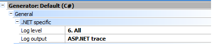
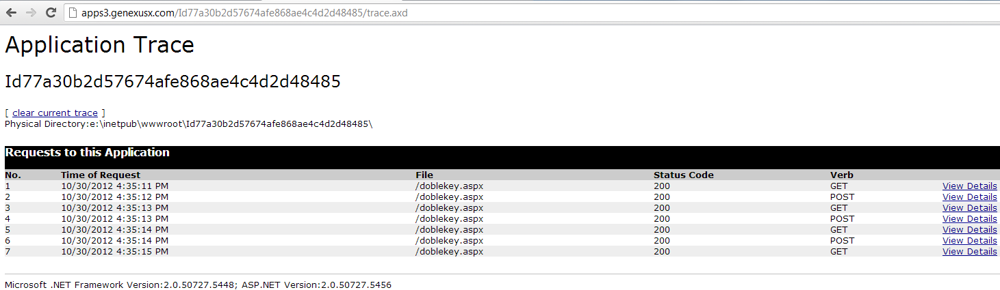

Sometimes errors occur in our applications and debugging them is necessary. For instance, when we are developing .Net applications hosted on GeneXus' Servers (i.e. using Cloud prototyping) the Log level property (X Evolution 3) is very useful and we can have all the information we need to solve all these issues. How to see the log file in an application hosted on .Net Cloud?The following properties need to be set on the C# Generator:  Once enabled, a new property in the web.config will be available under system.web: <trace enabled="true" localOnly="false" /> If the localOnly value is set to false, the log can be accessed by the following URL: http://apps3.genexusx.com/<VirtualDirectory>/trace.axd The log is similar to the one shown below: 
|
| Backlinks | |
| HowTo: Emulating SSO without using GAM remote authentication | Log external object |
| Log level property | Log output property |
| User Log level property |